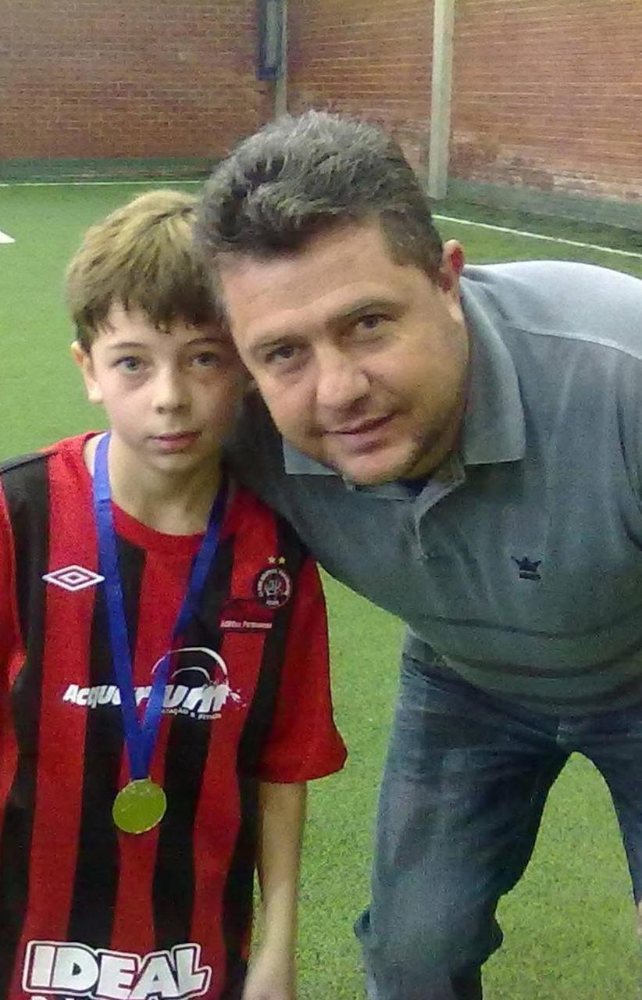
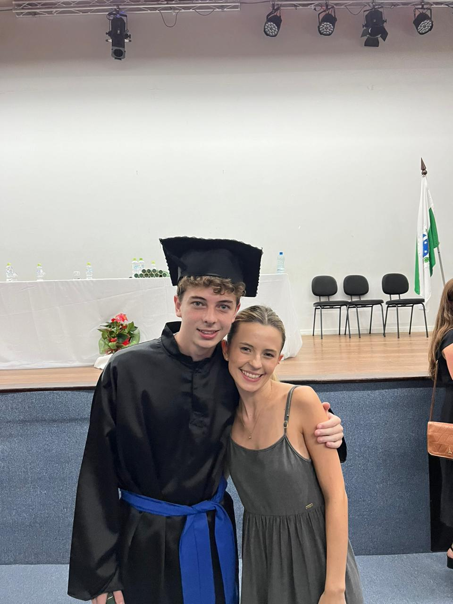
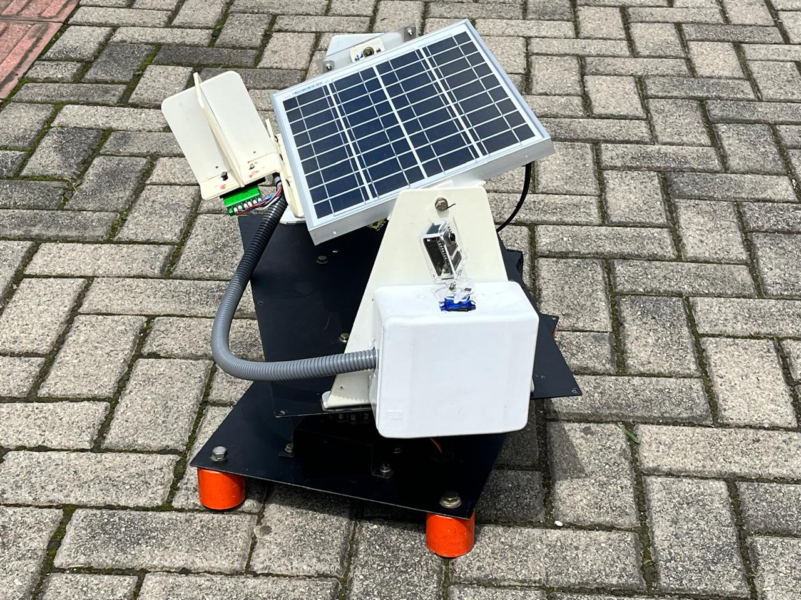
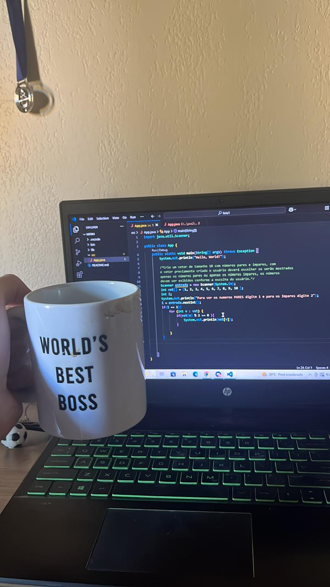

Onde tudo começou
Desde criança gostei muito de fazer piadas, jogar futebol e, principalmente, de matemática.

Da curiosidade de criança à paixão por código.
Desde criança gostei muito de fazer piadas, jogar futebol e, principalmente, de matemática.

Fiz uma prova para entrar no IFPR e cursar Automação Industrial. Segundo o meu pai, eu iria ganhar muito dinheiro a automatizar máquinas em indústrias!
Gostei muito do curso, fiz muitos amigos e aprendi coisas que nunca imaginei:

O culminar de todo esse aprendizado de hardware e lógica foi a criação de um Seguidor Solar.

Queres ver como funciona por dentro?
Baixar Documentação (PDF)Consegui uma bolsa pelo Prouni e entrei para a universidade. É aqui que estou desde então, conhecendo novas pessoas, aprendendo novas tecnologias e aprofundando-me no desenvolvimento.
Todos os projetos que vês no meu portfólio são frutos destes 3 anos intensos de estudo.
